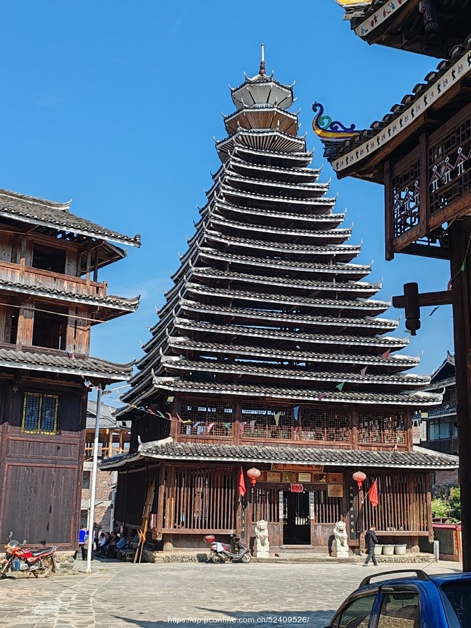
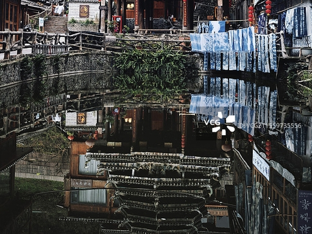
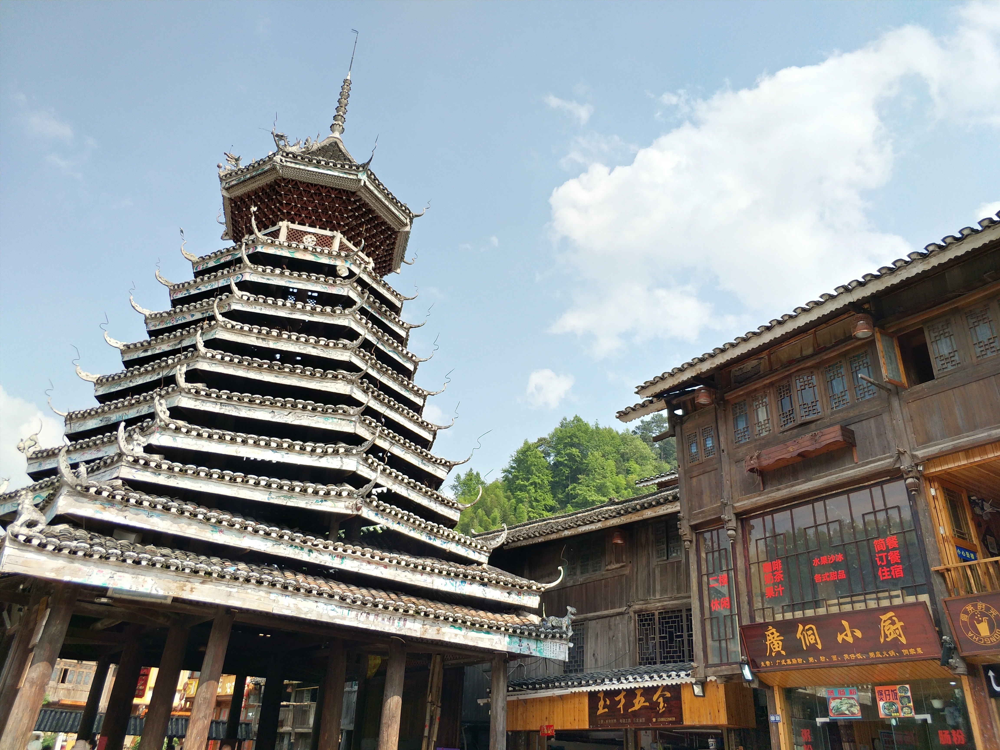
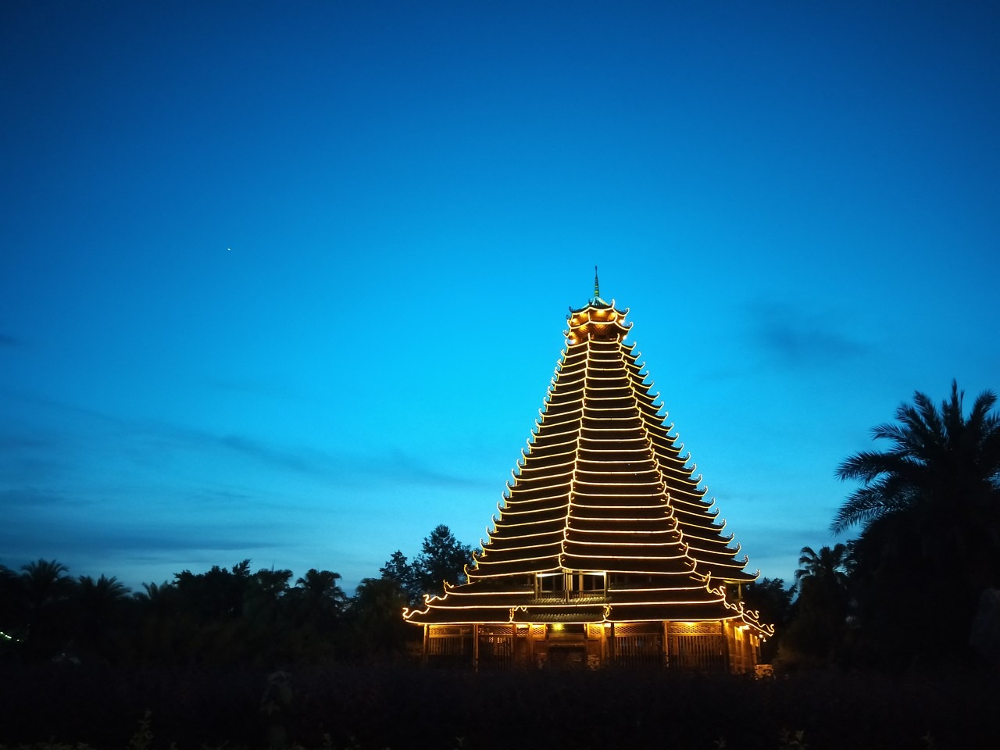

📜 历史价值
非物质文化遗产
2006年，侗族木构建筑营造技艺被列入中国首批国家级非物质文化遗产名录。这一技艺的核心在于全程不借助图纸，仅凭师傅口传身授、工匠手脑协作完成复杂的多重檐木构建筑。这种活态传承的建筑智慧，被视为人类非物质文化遗产中木作技艺的典范。
族群凝聚象征
鼓楼不仅是一栋建筑，更是侗寨的"灵魂"。村寨重大事务在此商议，节日活动在此举行，青年男女在此对歌约会，族群的历史记忆与文化认同在这里传递与延续。一座鼓楼代表一个房族，有多少鼓楼就有多少房族，鼓楼的数量直接体现侗寨的人口与规模。
代表建筑年代
贵州从江县的增冲鼓楼始建于清康熙年间（约1672年），是中国现存最古老的鼓楼之一，高25米、11重檐，历经三百余年风雨依然屹立。广西三江的程阳永济桥（风雨桥）建于1916年，全长77.76米，由5座桥亭和4段廊屋组成，是侗族风雨桥的杰出代表。
独立建筑传统
侗族建筑是在中原汉式礼制建筑体系之外独立发展的少数民族建筑传统。它不受皇家等级制度约束，形式更自由，功能更贴近村寨公共生活。全木榫卯、干栏架空、多重叠檐这三大特征，构成了侗族建筑有别于任何其他建筑传统的独特标识。
🏛️ 形制特征
鼓楼层数规制
侗族鼓楼的层数多为奇数，从3层到17层不等，其中以9层、11层最为常见。奇数层寓意吉祥，象征阳气旺盛；层数越多代表村寨历史越悠久、人口越多、经济越繁荣。建鼓楼是整个村寨的集体行为，所需木料和劳力由全寨共同出资出力，鼓楼因此凝聚着整个族群的情感。
多重檐向上递减
侗族鼓楼的多重檐并非简单叠加，而是每一层都向内收分，平面尺寸逐层缩小，出挑逐层减短，形成优美的宝塔状轮廓。这种向上递减的设计一方面具有良好的结构稳定性，另一方面使建筑轮廓线条轻盈流动，在南方多山的景观中犹如破云而出的宝塔，极具视觉冲击力。
宝顶造型
鼓楼顶部的宝顶是整座建筑的视觉焦点。常见形式有葫芦形（象征福禄多子）和火焰形（象征驱邪辟凶、生命旺盛）两种。宝顶通常以陶制或木制工艺完成，外表施以彩绘或釉面，在阳光下熠熠生辉。部分鼓楼宝顶上还饰有侗族传统图腾纹样，具有浓郁的民族文化特色。
风雨桥廊桥形式
侗族风雨桥是将桥与廊屋完美结合的独特建筑类型。桥墩以石砌为基础，桥身全为木构，廊屋覆盖桥面全程，行人无论刮风下雨都可无遮盖地通行。廊内设有长凳供村民休憩，是侗寨重要的公共空间。重要的风雨桥往往还设有桥亭，形成"亭-廊-亭"的节奏感十足的空间序列。
🔧 结构技艺
无钉榫卯工艺
侗族木构建筑不使用任何铁钉，完全依靠榫卯结构将数以千计的木构件咬合在一起。榫头与卯眼的形状、尺寸经过精密计算，在受力时越拉越紧，越压越稳。这种不用钉的做法不仅源于铁材匮乏的历史条件，更体现了侗族工匠对力学规律的深刻理解，是中国木作技艺最高水平的代表之一。
穿斗式构架
穿斗式构架是侗族建筑的核心结构体系，以竖向立柱为主体，横向穿枋将多根立柱串联成一榀（一组），多榀排列后形成整体框架。与北方抬梁式相比，穿斗式用料较细，柱子较多，整体性强，对木材的利用更为经济，特别适合盛产杉木的侗族山区。
牛腿斗拱
侗族建筑没有中原式的精致斗拱，而是以"牛腿"（粗壮的斜向撑木）代替斗拱承托出挑的屋檐。牛腿形态粗犷有力，通常在其上雕刻龙、凤、鱼等侗族图腾，兼具结构与装饰的双重功能。牛腿出挑越大，屋檐的遮雨面积越宽，这对多雨的侗族山区尤为重要。
口传营造技艺
侗族传统木匠（称"掌墨师"）不识图纸，却能凭借脑中的尺度记忆和手上的经验积累，精确建造出层数繁多、结构复杂的多重檐鼓楼。掌墨师用一根竹杆刻下所有尺寸，代替现代图纸。这套技艺通过严格的师徒制代代相传，至今仍是国家级非遗的核心传承内容。
📷 实景影像

侗族鼓楼实景

多重檐层叠结构

侗寨山水风貌

鼓楼飞檐细节
榫卯木构节点